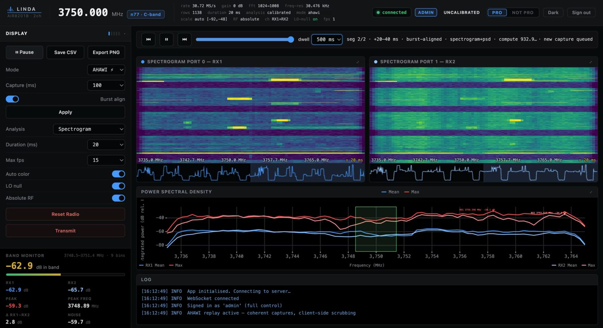

LINDA: Live IQ Navigation & Display Application
A live radio-spectrum monitor for 5G interference research. I built it at NIST on top of their striqt signal-analysis library, and it's now published NIST software used by the NASCTN team. One server owns the radio and streams live spectrograms and power spectral density to a browser, an SSH terminal, a kiosk screen, or a CLI.
~38klines of code
~200automated tests
8SDR families
4interfaces
